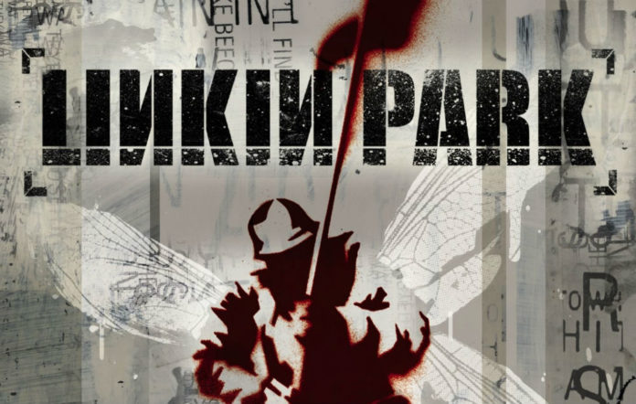
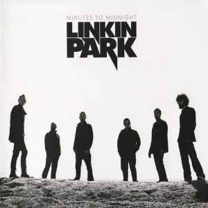
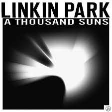
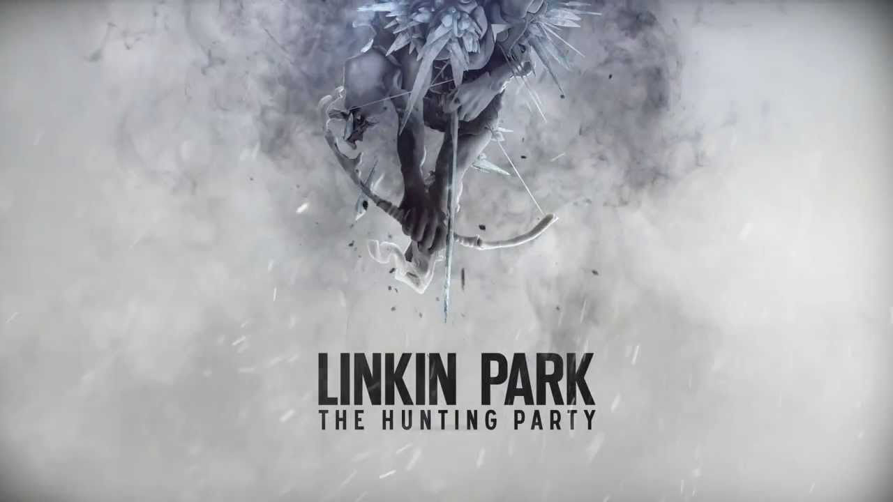

Discography - Albums Of Linkin Park
Hybrid Theory
Linkin Park is an American rock band, and "Hybrid Theory" is their first studio album. The publication date was
October 24, 2000. The album was a huge financial success and contributed to Linkin Park's rise to popularity on
a global scale. It is still among the top-selling albums of the twenty-first century.
Prior to changing their name to Linkin Park, the band went under the moniker "Hybrid Theory," which appears on
the album. The name of the band refers to how it combines aspects of alternative rock, nu-metal, and rap-rock.
A broad variety of listeners connected with "Hybrid Theory" distinctive blend of powerful guitar riffs,
electronic components, catchy tunes, and emotive lyrics. It examines themes of rage, dissatisfaction, hardships
in life, and self-reflection.
Several popular singles from the album were generated, including "One Step Closer," "Crawling," "Papercut," and
"In the End." In 2002, the song "Crawling" took home the Grammy for Best Hard Rock Performance.
The following tracks from "Hybrid Theory" are some of the best:
- "Papercut"
- "One Step Closer"
- "With You"
- "Points of Authority"
- "Crawling"
- "Runaway"
- "In the End"
- "A Place for My Head"
- "Forgotten"
- "Cure for the Itch"
- "Pushing Me Away"

"Hybrid Theory" It got a lot of positive reviews from critics and was well-liked by both rock and mainstream
listeners. With succeeding albums, Linkin Park was able to maintain their supremacy in the music business
because of their success.
Meteora (2003)
Released on March 25, 2003, "Meteora" is Linkin Park's second studio album. Linkin Park further cemented their
status as one of the top bands in the alternative rock and nu-metal genres with the release of "Meteora,"
building on the success of their first album, "Hybrid Theory."
The album maintains the band's distinctive style, which combines powerful guitar riffs, electronic components,
and lyrics that are filled with passion. A wide spectrum of listeners can relate to "Meteora"'s exploration of
subjects including personal hardships, contemplation, and the complexity of human emotions.
The album's significant songs include the following:
- "Somewhere I Belong" - A song about discovering oneself and one's position in the world.
- "Numb" - A moving song about feeling out of control and disconnected from the world.
- "Breaking the Habit" - A somber song that explores the effort to overcome bad habits.
- "Faint" -One of the band's more dynamic songs, it is a fast-paced, passionate, and energetic number.
- "From the Inside" -Examines issues of internal conflict and the search for resolution.
- "Lying from You" -An upbeat song with themes of treachery and dishonesty.
A commercial triumph, "Meteora" debuted at the top of the Billboard 200 list and sold millions of copies all
over the world. The singles from the album gained a lot of attention, which strengthened Linkin Park's position
as a major player in the rock music industry.
Like their last album, "Meteora" garnered favorable reviews from critics who commended the band's ability to
create music that is both accessible and emotionally powerful while still retaining their unique style.
Linkin Park's reputation as one of the most significant bands of the 2000s was cemented by the success of
"Meteora" and its songs, including "Numb" and "Somewhere I Belong."
Minutes to Midnight (2007)
Released on May 14, 2007, "Minutes to Midnight" is Linkin Park's third studio album. The band pushed into a more
alternative rock and experimental style, which was a considerable change from their prior nu-metal sound.
"Minutes to Midnight," the name of the album, alludes to the urgency and impending change and expresses the
band's ambition to advance and discover new creative horizons.
With the release of "Minutes to Midnight," Linkin Park adopted a more experienced and reflective approach to
songwriting. The topics of the album center on social and political concerns, introspective thoughts, and a
feeling of disenchantment with the world. "Minutes to Midnight" explores more sentimental and less angry subject
matter than their prior albums.
The album's significant songs include the following:
- "What I've Done"
- "Bleed It Out"
- "Shadow of the Day"
- "Leave Out All the Rest"
- "Given Up"

As a result of the band's shift from its prior sound, "Minutes to Midnight" was met with both favorable and
unfavorable reviews from reviewers and fans. Others desired the stronger nu-metal aspects found in Linkin Park's
early albums, while some commended them for their willingness to change and experiment.
"Minutes to Midnight" was a commercial triumph, debuting at the top of the Billboard 200 list despite the first
lukewarm reviews. "What I've Done," "Bleed It Out," and "Shadow of the Day," among other album singles, enjoyed
major exposure and chart success.
Linkin Park's reputation as a resilient and adaptable group that can modify their music to fit many styles and
topics was cemented with the release of the album and the ensuing tour.
A Thousand Suns (2010)
Released on September 14, 2010, "A Thousand Suns" is Linkin Park's fourth studio album. It is a concept album
that adopts a risk-taking and experimental stance, fusing electronic, alternative rock, and progressive rock
musical genres. The album's name, which is taken from a passage in Hindu literature, expresses the album's dual
theme of hope and devastation.
As the band explores a more intricate and conceptual narrative, "A Thousand Suns" deviates from Linkin Park's
prior albums. The CD discusses current world events, conflict, environmental challenges, political unrest, and
the possibility of salvation in the face of anarchy.
Significant songs from "A Thousand Suns" include:
- "The Catalyst" - The lead single, which fuses electronic and rock elements, and serves as a rallying cry for
change.
- "Burning in the Skies" - A melancholic and introspective song reflecting on personal struggles and lost
opportunities.
- "Waiting for the End" - An energetic and emotive track exploring the theme of renewal and moving forward.
- "Iridescent" - A powerful ballad that emphasizes the importance of perseverance and finding hope amid
adversity.
- "Blackout" - A dynamic and intense song that combines heavy guitars with electronic sounds.

The album flows as a continuous narrative, with interludes and introspective spoken-word passages, creating a
cohesive and immersive listening experience.
"A Thousand Suns" received a mixed critical response upon its release, with some praising the band's ambition
and willingness to experiment, while others found the departure from their earlier sound challenging to embrace.
Nonetheless, the album was commercially successful and found a dedicated fan base.
Linkin Park's willingness to take creative risks with "A Thousand Suns" demonstrated their commitment to
evolving as musicians and addressing thought-provoking themes through their music.
Please note that my information might be limited to what was available up to September 2021, so there may have
been further developments or releases related to Linkin Park or "A Thousand Suns" since then.
Living Things (2012)
"Living Things" is the fifth studio album by Linkin Park, released on June 20, 2012. Building on the
experimental direction they took with "A Thousand Suns," the album combines elements of alternative rock,
electronic music, and pop sensibilities. "Living Things" represents a return to a more accessible and mainstream
sound while still incorporating the band's signature introspective and emotional themes.
The album's title, "Living Things," reflects the human element present in the songs and explores the
relationships between people, the environment, and technology. The lyrics touch on themes of personal growth,
relationships, and the impact of human actions on the world.
Key tracks from "Living Things" include:
- "Burn It Down"
- "Lost in the Echo"
- "In My Remains"
- "Castle of Glass"
- "I'll Be Gone"

The majority of reviews for "Living Things" from both reviewers and viewers were favorable. A large audience
found the album's blend of electronic and rock elements appealing, and it was a financial success all over the
world.
Linkin Park's ability to experiment with their sound and incorporate various influences while remaining true to
their emotional core continued to resound with their fan base, and "Living Things" cemented their position as a
band capable of evolving their music while maintaining their distinct identity.
The Hunting Party (2014)
Released on June 13, 2014, "The Hunting Party" is Linkin Park's sixth studio album. The band's earlier, harder
rock sound is prominently revived on the album, leaving behind the electronic and experimental genres explored
on their prior albums. The violent and unfiltered intensity of "The Hunting Party" is highlighted by its
concentration on guitar-driven rock and loud vocals.
The band's goal is to return to its roots and capture the spirit of their earlier, more aggressive music, and
"The Hunting Party" symbolizes this goal. The CD demonstrates the spirit of togetherness and fraternity in the
rock world through collaborations with several guest musicians from diverse rock bands.
The following are notable tunes from "The Hunting Party":
- "Guilty All the Same"
- "Until It's Gone"
- "Rebellion"
- "Final Masquerade"
- "A Line in the Sand"

The response to "The Hunting Party" was largely favorable, especially from fans who praised the band's
return to a harder sound. Critics lauded the album's vitality and forceful performances while praising the
band's continued musical evolution.
Linkin Park has shown their capacity to explore and adapt within the rock genre while keeping true to their
creative vision by going back to their rock roots and working with different artists.